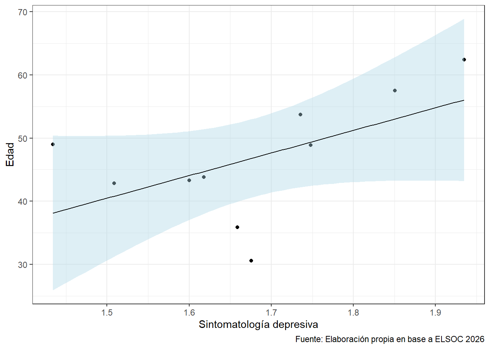

Título del trabajo grupal
Estadística Correlacional 2023
Introducción
Aqui ponemos la introducción, de acuerdo con la pauta.
En este ejemplo daremos una mirada a la salud mental, y exploraremos posibles asociaciones con la edad, sexo y nivel educacional.
Variables
Aqui ponemos las variables, de acuerdo con la pauta.
Podemos cargar las librerías sin que aparezca en nuestro informe, señalando la especificación al chunk echo=FALSE.
Esto lo podemos repetir para la carga de la base de datos y el procesamiento de los datos.
A continuación, en nuestro ejemplo describiremos las variables necesarias para responder a nuestro objetivo.
Descripción de variables
En este ejemplo, se seleccionaron las variables:
- sexo: sexo del encuestado, con nivel de medición nominal
- edad: edad del encuestado, con nivel de medición intervalar
- nedu: nivel educativo del encuestado, con nivel de medición ordinal
Y las variables del módulo de Salud y Bienestar, referentes a Estado de ánimo: sintomatología depresiva, con nivel de medición ordinal, los ítems son los siguientes:
- Frecuencia: Poco interés o alegría
- Frecuencia: Decaimiento, pesadez o desesperanza
- Frecuencia: Dificultad para dormir o exceso de sueño
- Frecuencia: Cansancio o sensación de falta de energía
- Frecuencia: Apetito disminuido o aumentado
- Frecuencia: Dificultad para concentrarse
- Frecuencia: Mala opinión de sí mismo
- Frecuencia: Enlentecimiento físico
- Frecuencia: Pensamiento de muerte o dañarse
En la Tabla 1 podemos ver que la proporción de mujeres que responde la encuesta corresponde a 60.12%, mientras que la propoción de hombres corresponde a 39.88%.
| Sexo | n | Proporción |
|---|---|---|
| 1 | 1151 | 39.88 |
| 2 | 1735 | 60.12 |
| a Fuente: Elaboración propia en base a ELSOC 2016. |
Análisis
Aqui ponemos el análisis, de acuerdo con la pauta.
En nuestro ejemplo, analizaremos la correlación entre algunas variables.
En la Figura 1 es posible apreciar… La correlación entre la edad y el promedio de la sintomatología depresiva corresponde a 0.0176236.

Conclusiones
Aqui redactamos algunas conclusiones, de acuerdo con la pauta.
Biliografía
COES (2023). Radiografía del Cambio Social: Análisis de Resultados Longitudinales ELSOC 2016-2022. Presentación de Resultados COES. Marzo, Santiago de Chile.
R Core Team (2023). R: A Language and Environment for Statistical Computing. R Foundation for Statistical Computing, Vienna, Austria. https://www.R-project.org/.